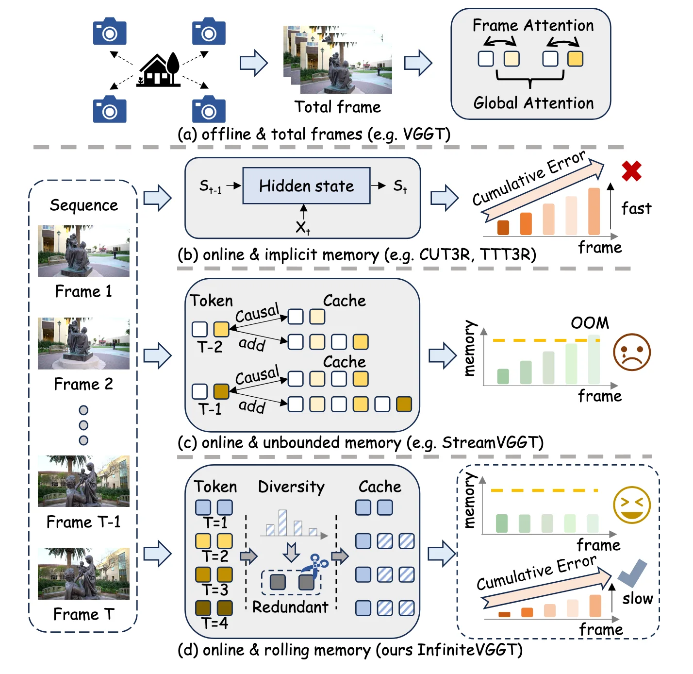
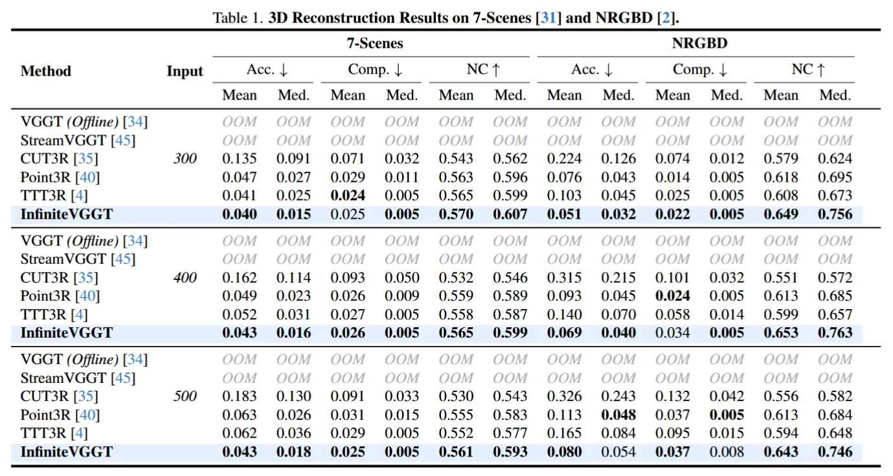
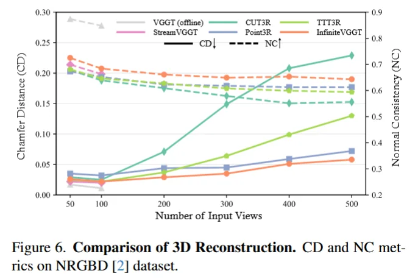
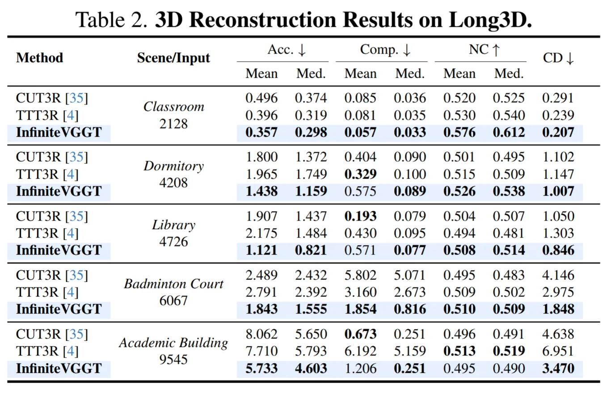
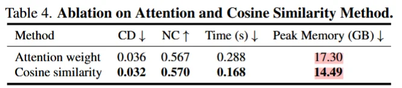
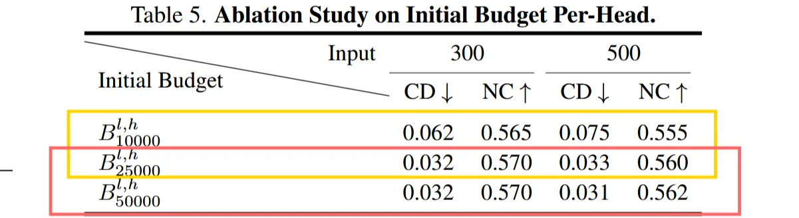
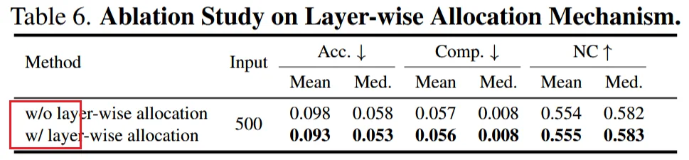

InfiniteVGGT: Visual Geometry Grounded Transformer for Endless Streams
在 VGGT / StreamVGGT 这类 feed-forward visual geometry Transformer 上，通过 bounded KV cache 和 token-level rolling memory，使长序列流式 3D reconstruction 不再因历史 cache 无界增长而崩溃。
核心判断：InfiniteVGGT 解决 streaming Transformer 的 memory bottleneck，不是完整 SLAM 的 global consistency bottleneck
0. Pipeline
[!tip] InfiniteVGGT 的关键是把 StreamVGGT 的无界 causal KV cache 改成 bounded rolling memory。
单步流式输入： It ∈ ℝH × W × 3 历史记忆状态： 𝒞t − 1 = {(Kt − 1(l,h),Vt − 1(l,h))}l = 1, h = 1L, Ha 单步输出： (gt,Dt,Pt,Tt,𝒞t) 整体数据流：
I_t
-> Image Encoder / patch tokens
-> causal temporal attention with KV cache C_{t-1}
-> geometry heads: camera g_t, depth D_t, point map P_t, tracks T_t
-> generate new K_t,V_t
-> rolling memory pruning
-> bounded cache C_t更数学来看： zt = fθ(It) ht = CausalAttn(Qt,K ≤ t,V ≤ t) (gt,Dt,Pt,Tt) = ϕθ(ht) 传统 StreamVGGT 的 cache 更新： 𝒞t = 𝒞t − 1 ∪ {Kt, Vt} 因此： |𝒞t| = 𝒪(t) InfiniteVGGT 的 bounded update：
𝒞t = 𝒞anchor ∪ TopK(𝒞2 : tcandidate;sdiv) VGGT-family 的 3D point map 通常被锚定到第一帧 canonical coordinate system，所以第一帧 cache 被永久保留：
𝒞anchor = 𝒞1
显存状态:C_t = anchor cache + bounded candidate cache \[ \boxed{ \mathcal O(1)\ \text{指 KV cache 显存对序列长度 }T\text{ 有界} } \]
1. Method
1.1 长序列 3D Transformer 的内存问题

离线多视图 Transformer 的全局注意力： \[ \mathrm{Attn}(Q,K,V) = \mathrm{softmax} \left( \frac{QK^\top}{\sqrt d} \right)V \] 若每帧有 n 个 token，总帧数为 T，则：Q, K, V ∈ ℝ(Tn) × d
attention matrix：A = QK⊤ ∈ ℝ(Tn) × (Tn) ，复杂度：𝒪(T2n2d) ，这对 endless stream 不可接受。
Streaming 后，当前帧只需要访问历史 KV，所以只需要把算出来的KV追加到历史缓存里即可： \[ \mathrm{Attn}(Q_t,K_{\leq t},V_{\leq t}) = \mathrm{softmax} \left( \frac{Q_tK_{\leq t}^{\top}}{\sqrt d} \right)V_{\leq t} \] KV cache 保存的是每一帧、每一层、每个 attention head 里已经计算好的每一个历史 token 的 K 和 V 张量。如果历史 KV 全部保留： K ≤ t = [K1;K2;⋯;Kt] 则 KV cache size： Memory(t) ∝ t ⋅ n ⋅ d ⋅ L 其中：
| 符号 | 含义 |
|---|---|
| t | 当前时间步 |
| n | 每帧 token 数 |
| d | token/channel dimension |
| L | Transformer 层数 |
所以 StreamVGGT 类方法的瓶颈是： \[ \boxed{ \text{历史越长，KV cache 越大；若不剪枝，streaming 只是延迟 OOM} } \] —
1.2 不用 attention score 的原因
直觉上，历史 token 的重要性可以由 attention weight 决定：$a_{t,i}=\mathrm{softmax}\left(\frac{q_t^\top k_i}{\sqrt d}\right)$ 然后保留高 attention token： 𝒞t = TopK(𝒞 ≤ t;at, i) 但是要知道每个历史 token 的 attention weight，就必须显式算出并保存完整 attention matrix： At = QtK ≤ t⊤ 这和 FlashAttention 的工程原则冲突。FlashAttention 的核心优势是不显式保存完整 attention matrix。它通过分块计算，一边算 softmax，一边乘 V，避免把巨大的 At 真正落到显存里。所以如果为了做 token pruning，又强行把 At materialize 出来，就等于把 FlashAttention 的优势废掉了。
InfiniteVGGT 的判断是：eviction 不能依赖显式 attention map，而应该用一个不需要展开 At 的替代指标。不问“当前帧最注意谁”，而问“历史 token 之间谁最重复、谁最有差异”，用这种 attention-independent proxy 来决定保留和删除。
1.3 key-space diversity 作为 redundancy proxy
InfiniteVGGT 的经验观察：cos (kt,kt − 1) ≈ 0.95+，即
[!danger] 核心 相邻帧 patch tokens 在 DINO / VGGT backbone 下高度相似。 这说明直接逐帧保留全部 KV 是冗余的。
𝒞t = 𝒞t − 1 ∪ {Kt, Vt} ⇒ 大量重复 token InfiniteVGGT 用 key-space diversity 来估计 token 的非冗余程度。 对每个 layer l、head h，候选 key 做 L2 normalize： \[ \hat k_i^{(l,h)} = \frac{k_i^{(l,h)}}{\|k_i^{(l,h)}\|_2} \] 计算候选 key 均值： >𝒦cand(l,h) 是从候选 cache (𝒞cand(l,h) )里单独取出来的候选 key 集合。
\[ \mu^{(l,h)} = \frac{1} { |\mathcal K_{\mathrm{cand}}^{(l,h)}| } \sum_{\hat k_i\in \mathcal K_{\mathrm{cand}}^{(l,h)}} \hat k_i \] 定义 diversity score： sdiv(l,h)(i) = − cos (k̂i(l,h),μ(l,h)) \[ s_{\mathrm{div}}^{(l,h)}(i) = - \frac{ \hat k_i^{(l,h)\top}\mu^{(l,h)} } { \|\mu^{(l,h)}\|_2 } \] 解释：如果某个 token 和均值方向很接近，说明它代表的是大量重复出现的常见信息，冗余度高，优先删除；如果某个 token 离均值方向很远，说明它特殊、不重复，可能携带新的视角、新的结构边界或少见几何信息，优先保留。 sdiv ↑ ⇒ token farther from mean ⇒ less redundant ⇒ higher retention priority ⇒ Keep 最终 cache 更新： >𝒞cand(l,h) 是第 l 层、第 h 个 attention head 里等待筛选的候选 KV cache 集合，里面包含一批历史 token 对应的 K, V. 𝒞t(l,h) = 𝒞anchor(l,h) ∪ TopKB(l,h)(𝒞cand(l,h);sdiv)
这就是 InfiniteVGGT 的核心方法：feature-space cache selection。 不让 K ≤ t, V ≤ t 无限增长，而是只保留第一帧 anchor 和一部分高价值历史 token。
1.4 逐层按需分配 cache 容量
KV cache 的总容量是有限的，但这个容量不应该平均分给所有 Transformer 层。原因是不同层保存的信息类型不一样： - 浅层更偏局部纹理、边缘和细粒度几何； - 中层更可能负责跨视角匹配、空间对齐； - 深层更偏全局语义、相机级关系或整体场景上下文。
所以如果所有层使用相同 budget：B(1) = B(2) = ⋯ = B(L)不合理。 >就等于假设所有层的历史 token 都同样重要、同样冗余。 >但这通常不成立。 >有些层的历史 token 变化很小，大量重复，少存一点影响不大； >有些层包含更丰富的几何变化，剪太狠会伤害重建质量。
InfiniteVGGT 使用 layer-wise allocation, 先给定一个总预算 Btotal，再根据每层历史 token 的 diversity 程度分配预算： B(l) = p(l)Btotal 其中 p(l) 由该层的平均 diversity score s̄div(l) 通过 softmax 得到： \[ p^{(l)} = \frac{ \exp(\bar s_{\mathrm{div}}^{(l)}/\tau) } { \sum_j \exp(\bar s_{\mathrm{div}}^{(j)}/\tau) } \] 直观理解： - 如果第 l 层的历史 token 更分散、更不重复，说明这一层可能包含更多有价值的历史信息，就多分一点 cache budget； - 如果某层 token 很相似，说明冗余高，就少分一点。 - 不是严格的几何理论最优解，而是工程上合理的资源分配策略：把有限显存优先给信息密度更高的层。
2. Experiments
2.1 对比实验
(1) 3DR on RGBD and 7-scenes
bounded KV cache 没有明显破坏短中程几何质量，并让原本 OOM 的 VGGT-family 模型可以流式运行。并且显存可控。

(2) RGBD-3DR 对比试验
在输入帧数增加时，比多数 baseline 更抗长序列退化。
证明： bounded KV cache pruning 在 50–500 views 范围内能维持较好的 reconstruction stability。

(3) Long 3D 对比实验
在很长 RGB stream 下，InfiniteVGGT 能持续推理，误差传播比 baseline 更受控。 证明了ACC但是没有一致性的证明，并且误差还是很高（drift）。

InfiniteVGGT:
- 可以处理更长 RGB stream
- 相比无界 KV / sliding window / compressed state baseline 更稳
- 仍存在长程漂移
- 没有证明闭环重定位能力
- 没有证明万帧级全局拓扑一致2.2 消融实验
（1）Pruning 消融
基于 attention score 的 token 筛选理论上更直接，但工程上不适合 streaming；key-space cosine similarity 虽然是 proxy，却更快、更省显存，而且质量没有变差。

#### （2） Memory budget 消融
说明 KV cache 剪枝不是没有代价。
每个 head 保留的 token budget B 太小时，历史视觉几何证据会丢失，模型只能依赖较短或较稀疏的历史上下文，容易出现漂移、几何不完整、局部结构断裂： B ↓ ⇒ historical evidence loss ↑ ⇒ geometry drift / incompleteness↑ 而当 B 变大，历史信息保存更多，几何质量通常更好，但显存和计算也会上升： B ↑ ⇒ more retained evidence ⇒ better geometry ⇒ higher memory / compute InfiniteVGGT 并没消除 memory-quality trade-off，只是把无界增长变为可控预算.
（3） Layer-wise allocation 消融

证明不同 Transformer 层不应该被一视同仁地分配 cache 容量。不同层的历史 token 冗余度不同。
[!tip] 启发 memory budget 应该根据层的信息密度自适应分配，而不是平均切块。
3. Limitations
（1）长序列问题
用 固定大小的 KV cache 换长序列可运行性，但代价是历史信息不完整。 |𝒞t| ≤ |𝒞anchor| + B 无论视频有多长，cache 里只保留第一帧 anchor 和最多 B 个候选历史 token，因此 KV 显存对序列长度 T 是常数级： VRAMKV = 𝒪(1) w.r.t. T 但这意味某些历史帧的 K, V 会被删掉，一旦删掉，模型后续无法直接访问那段历史观测。 如果相机很久以后回到旧区域，系统并没有显式 place recognition、loop closure、pose graph 或 global BA 来重新建立拓扑约束。
（2）token 保留选择
真实视频中，远离均值的 token 未必是可靠几何信息，也可能是动态物体、运动模糊、反光、高光、遮挡边界、rolling shutter distortion，甚至是白墙上的深度幻觉。 这个策略高效，但不够几何鲁棒。更理想的保留分数应该把 diversity、重投影一致性、静态性、空间覆盖和不确定性结合起来。
（3）single-reference fragility
保留第一帧 cache 可以让后续预测的 point map、depth 和 camera pose 有一个固定参考系。这比完全滚动的历史 cache 更稳定。 但如果第一帧本身质量差，比如低纹理、模糊、曝光差、动态前景遮挡、baseline 太小，那么全局坐标参考一开始就是脆弱的。后续所有几何预测都围绕这个不可靠 reference 展开，错误会被长期继承。
4. 优化
（1） geometry-aware memory routing
在 InfiniteVGGT 现有 cache eviction 上替换打分函数。原方法只用 sdiv(i) = − cos (k̂i,μ) 判断 token 是否“和别人不一样”，但“不一样”不等于“几何可靠”。可把 token 保留分数扩展为：
\[ s_i=\alpha s_{\mathrm{div},i}+\beta s_{\mathrm{repr},i}+\gamma s_{\mathrm{static},i}+\delta s_{\mathrm{coverage},i}-\lambda\sigma_i \]
其中 srepr 用相邻帧 depth / pose 做 reprojection consistency，sstatic 抑制动态物体，scoverage 保证空间覆盖，σi 抑制不确定 token。 只在 cache pruning 阶段增加几何验证信号，从 feature-space eviction 改成 geometry-aware eviction。预期提升动态场景、弱纹理场景、遮挡边界和长序列稳定性。（2） topology-aware streaming reconstruction
InfiniteVGGT 短板：只有 bounded neural memory，没有显式拓扑。 InfiniteVGGT 的 cache 里保存的是 token，不是 submap、loop edge 或 pose graph，所以不能真正处理 long-term revisit。 可在前端保留 InfiniteVGGT 的流式预测，同时外接一个轻量 submap memory： vk = (z̄k,P̄k,T̄k,Σk,𝒞ksummary) 再用 place descriptor 检索 loop candidate，用重投影残差验证：
\[ r_{t,k}=\frac{1}{|\Omega|}\sum_{u\in\Omega}\rho\left(\left\|\pi\left(K_tT_{t,k}P_k(u)\right)-u\right\|\right) \]
验证通过后加入 pose graph，并异步优化：\[ \min_{\{T_i\}}\sum_{(i,j)\in\mathcal E}\left\|\log\left(\hat T_{ij}^{-1}T_i^{-1}T_j\right)\right\|_{\Sigma_{ij}}^2 \]
bounded neural memory 负责低延迟前端，explicit geometric topology 负责长程一致性和闭环纠偏。预期提升万帧级 drift、loop closure 后全局一致性、ATE / CD 的长序列退化曲线。